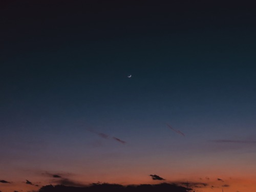

17:52
私が生きてこれた最大の理由は、人に興味を持たないこと、これに尽きるのではと思う。正直全く興味がないわけではないけれど、やはり自分自身とか、人間以外のものが不思議。興味を持ってしまうと疲れる気もする。そんな気疲れに耐えられる身体でなかったし。関わりを持つことと、興味を持つことは全く違うから、上手く調節して生きていくといい。
her dairy records
私が生きてこれた最大の理由は、人に興味を持たないこと、これに尽きるのではと思う。正直全く興味がないわけではないけれど、やはり自分自身とか、人間以外のものが不思議。興味を持ってしまうと疲れる気もする。そんな気疲れに耐えられる身体でなかったし。関わりを持つことと、興味を持つことは全く違うから、上手く調節して生きていくといい。
私が生きている都会の街。私は田舎で生まれ育ったので、都会には慣れない。田舎が好きだと思ったこともないけどね。先日、自分の映像撮影で北国へ滞在しました。車でしか移動できない小さな街。ここへ暮らす人々はどうか都会へ憧れないで欲しい。観光地として盛り上げようと頑張っているようだけれど、暮らす人々が幸せでいられることが何よりかな。この静けさを保ってくれ。
美しいもの、そんなもの身の回りになかった。美しいものを見たかった。その一心で生きてきた気がする。高校生の頃までは、人間もときに美しいと思っていたけれど、そうとも言えない。大人になってからはがっかりすることのほうが多いし、私もがっかりされていると思う。美しいものって何だろうか。美しさは比較対象がいないと理解できないでしょう。
とても人に何かを教えられるような人間ではない私。そんな私でも何かを生み出す。私はもう大人になった。なることができた。平坦な毎日を達観している。大人になってから思うことは、自分よりも若い人達のこと。私はお手本になれる部分はほとんどない。強いて言えば勉強をたくさんするべきだということ。かな。